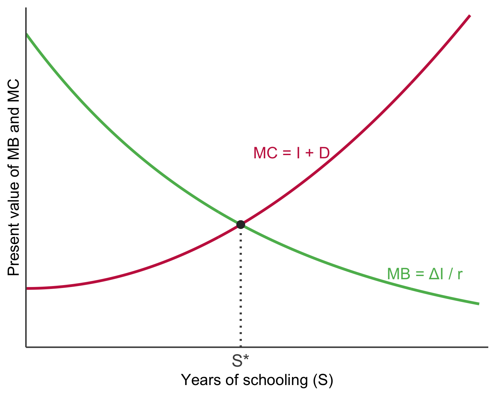
Human Capital Theory: Applications to Education and Training
EC306- Wages and Employment
Justin Smith
Wilfrid Laurier University
Fall 2026

Goals of This Section
Goals of This Section
In this section we will:
- See how education is related to employment and unemployment in Canada
- Treat schooling as an investment, and find the best amount using present values and the internal rate of return
- Explain how education can raise pay by signalling ability, even if it adds no skills
- Estimate the return to schooling, and see how economists deal with ability bias
- Look at early childhood education, social returns, and the link between education and inequality
- Ask who pays for job training, and whether government training programs work
Introduction
Educational Attainment by Sex, Ages 25–44
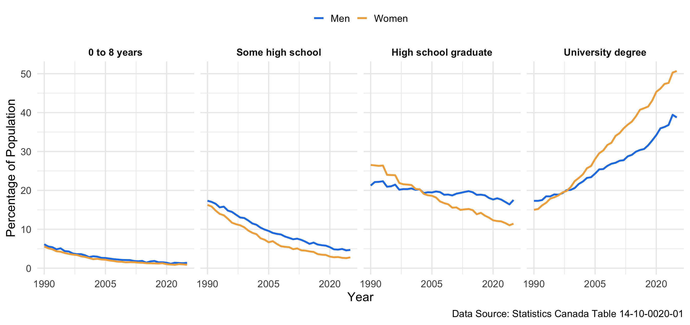
Unemployment Rate by Education, Ages 25–44
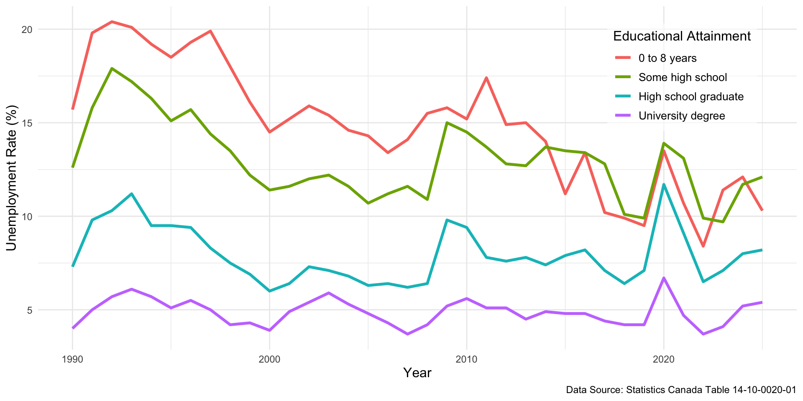
Human Capital Theory
Education as an Investment
- Firms invest in physical capital: they pay now for machines that raise output later, and invest when the benefits outweigh the costs
Key Definition
Human capital: the skills, knowledge and abilities that make a person productive. People pay now, in tuition and forgone earnings, for higher earnings later
- Human capital differs from physical capital in three ways:
- Non-money benefits: school can be enjoyable, and more educated workers face less unemployment risk
- Financing: you can’t offer your future skills as collateral for a loan
- Private vs. social: education can benefit other people too, and some of its costs to the student are transfers rather than costs to society
Private Investment in Education
Comparing Income Streams
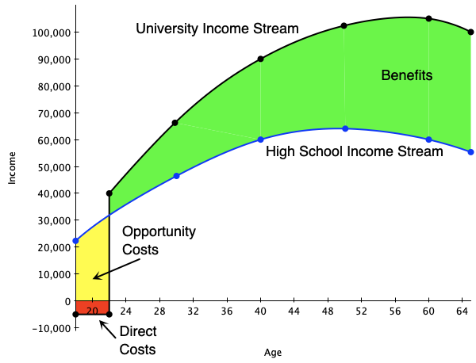
- An 18-year-old high school graduate decides whether to go to university
- Going has direct costs (tuition, books) and the earnings forgone while in school
- The payoff is higher earnings for the rest of a working life
- Each path is an age-earnings profile: earnings rise with age at a decreasing rate, as workers keep learning on the job
- Go if the present value of the green area beats the present value of the red and yellow areas
The Present Value of Each Path
- Work from age 18 until retirement at age \(T\), earning \(I\) a year, with interest rate \(r\):
\[PV = I + \frac{I}{1+r} + \dots + \frac{I}{(1+r)^{T-18}} \approx I + \frac{I}{r}\]
- One more year of school: pay direct costs \(D\), earn nothing that year, then earn \(I + \Delta I\) every year after:
\[PV^* \approx \frac{I + \Delta I}{r} - D\]
- The net gain from the extra year:
\[PV^* - PV \approx \frac{\Delta I}{r} - (I + D)\]
The Investment Condition
Investment Condition
- Marginal benefit: \(MB = \Delta I / r\), the present value of the earnings gain
- Marginal cost: \(MC = I + D\), forgone earnings plus direct costs
Another year of school is worth it if \(MB > MC\). Keep going until
\[\frac{\Delta I}{r} = I + D\]
- Example: a year of school means giving up \(I = \$30{,}000\) and paying \(D = \$10{,}000\), and it raises earnings by \(\Delta I = \$3{,}000\) a year after
- At \(r = 5\%\): \(MB = \$3{,}000 / 0.05 = \$60{,}000\), more than \(MC = \$40{,}000\). Stay in school
Marginal Benefit Equals Marginal Cost
- MB falls with more schooling: each year adds less to earnings, and there are fewer working years left to collect the gain
- MC rises: forgone earnings \(I\) grow with each year of school, and university charges tuition where high school is free
- The optimal schooling \(S^*\) is where \(MB = MC\)
The Internal Rate of Return
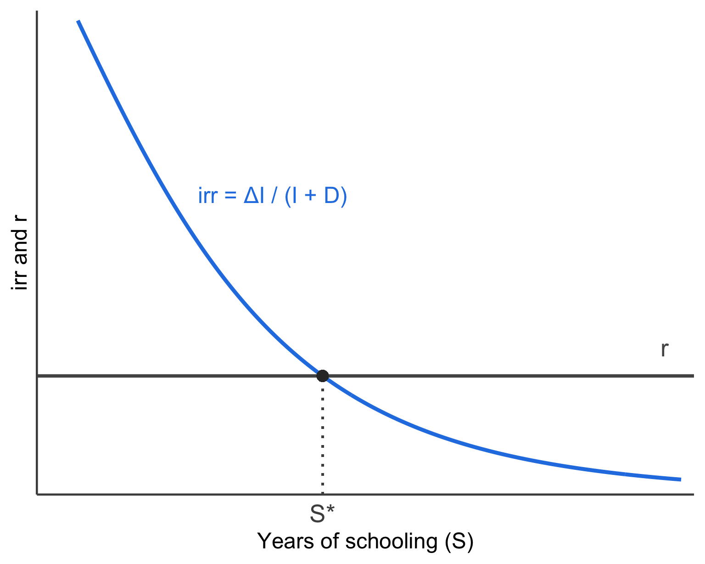
Key Definition
Internal rate of return (\(irr\)): the interest rate that makes the net present value of the investment zero
- Setting \(\Delta I / irr = I + D\) gives \(irr = \dfrac{\Delta I}{I + D}\)
- Invest while \(irr > r\), the opportunity cost of the money. Stop where \(irr = r\), at the same \(S^*\)
- Example: \(irr = 3{,}000 / 40{,}000 = 7.5\%\), above \(r = 5\%\), so stay in school
iClicker Question
Priya can take a one-year program. Tuition and books cost $8,000, and she would give up a $32,000 job for the year. After it, she would earn $3,000 a year more for the rest of her career. She can borrow or save at 8%. Using the approximations from class, what should she do?
A) Enroll, because the return of 37.5% beats the 8% interest rate
B) Enroll, because she earns $3,000 more every year for the rest of her career
C) Don’t enroll, because the return of 7.5% is below the 8% interest rate
D) Don’t enroll, because $3,000 a year is less than the $40,000 cost
E) Enroll, because the return of 9.4% beats the 8% interest rate
What Changes the Decision
- Age: invest early. The young give up less pay, and have more years to collect the return
- Time out of the labour force: people who expect to be in and out of work collect the gain for fewer years, so they invest less
- Student loans or tuition subsidies: they lower the cost of borrowing or \(D\), so more schooling
- A more progressive income tax: it shrinks the after-tax gain \(\Delta I\) more than the after-tax cost, so less schooling
- Better pay in jobs that need no degree: as in an oil boom, it raises forgone earnings \(I\), so less schooling
- A lower interest rate: it raises the present value of future gains, so more schooling
Financing and Other Complications
Credit Constraints
- The model assumes perfect capital markets: anyone can borrow at \(r\) against future earnings
- In reality, students can’t easily borrow that way: there’s no collateral, and a bank can’t repossess a degree
- So some students invest too little, even when the return beats the interest rate
- Income-contingent loans: repayments rise with later income, so graduates who earn little repay little. Australia has used this since 1989
- Debt aversion: some students avoid loans even when borrowing would pay off
- Risk and information: returns are uncertain, and risk-averse students invest less. Students may also misjudge costs and returns, especially if no one in their family went to university
- Field of study: returns differ widely by program, so the choice is what to study as well as how much
iClicker Question
A recession cuts pay and hours this year for 18-year-olds who go straight to work. It doesn’t change what anyone will earn in later years. In the human capital model from class, what happens to college and university enrolment?
A) It rises, because students give up less pay, so the cost of school falls
B) It doesn’t change, because what graduates will earn later hasn’t changed
C) It falls, because families have less money to pay tuition
D) It falls, because a recession lowers the return to all investments
E) It rises, because the earnings gain from school, \(\Delta I\), rises
Signalling
Human Capital or Signalling?
Two Explanations for Why Education Pays
- Human capital: education raises productivity, and pay follows
- Signalling: education reveals productivity that was already there
- Employers can’t see a new hire’s productivity. Workers know their own ability, but can’t credibly tell the employer
- With no information, firms pay everyone the average productivity
- Under the right conditions, education acts as a signal: high-ability workers get it, and employers pay them more
- Education can then raise pay even if it adds no skills at all
When Education Can Signal Ability
Conditions for a Signal
- Education must be costly to get
- It must be more costly for low-ability workers. Otherwise they would get it too, and fake high ability
- Employers’ beliefs must be confirmed once they see workers on the job, or they will change their wage offers
- When these hold, education sorts workers by ability, and each is paid what they produce
- Why would school cost low-ability students more? It takes them more effort, more time, and more stress to get the same credential
A Two-Type Model
- Two types of workers, and employers can’t tell them apart:
Low ability (L):
- Marginal product: \(1\)
- Cost of \(s\) years of school: \(c_L(s) = s\)
High ability (H):
- Marginal product: \(2\)
- Cost of \(s\) years of school: \(c_H(s) = s/2\)
- Employers believe that anyone with at least \(s^*\) years of school is type H, and pay
\[w(s) = \begin{cases} 2 & \text{if } s \ge s^* \\ 1 & \text{if } s < s^* \end{cases}\]
- Each worker chooses \(s\) to maximize \(w(s) - c(s)\). More than \(s^*\) costs more but pays no more, so each worker picks either \(0\) or \(s^*\)
Who Gets Educated?
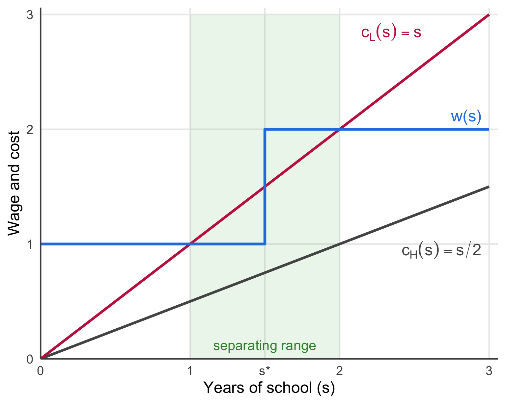
- Type H gets \(s^*\) if \(2 - \frac{s^*}{2} > 1\), that is, if \(s^* < 2\)
- Type L gets \(s^*\) if \(2 - s^* > 1\), that is, if \(s^* < 1\)
A Separating Equilibrium
If \(1 < s^* < 2\), only type H gets educated. Employers’ beliefs are confirmed, so education reveals each worker’s type
- If \(s^* < 1\) both types get educated, and if \(s^* > 2\) neither does. Either way, the signal tells employers nothing
iClicker Question
Change one thing in the signalling model: school is now cheaper for type H, with \(c_H(s) = s/3\). Type L’s cost is still \(c_L(s) = s\), and the wages are still 1 and 2. Which cutoffs \(s^*\) now separate the two types?
A) \(1 < s^* < 2\)
B) \(1 < s^* < 3\)
C) \(0 < s^* < 3\)
D) \(2 < s^* < 3\)
E) \(s^* < 1\)
What Signalling Implies
- Both theories predict the same thing: more educated workers earn more. That makes them hard to tell apart in the data
- For the individual, education pays either way. The difference is for society:
- Under human capital, education raises what workers produce
- Under signalling, it only sorts workers, and the resources spent on it are a social waste
- Under signalling, subsidizing education is mainly a transfer to high-ability workers, who get the subsidized signal
- Sorting still has some value: it helps match workers to the jobs that suit them
Estimating the Returns to Schooling
The Human Capital Earnings Function
Key Definition
The human capital earnings function relates log earnings to years of schooling \(S\) and experience \(EXP\):
\[\ln I = \alpha + rS + \beta_1 EXP + \beta_2 EXP^2 + \varepsilon\]
- With small direct costs, \(irr = \Delta I / I\), and \(\Delta I / I \approx \Delta \ln I\). So the coefficient on \(S\) is the return to schooling: the percent rise in earnings per extra year
- It’s written \(r\) because people invest until \(irr = r\)
- \(EXP\) is potential experience: years since leaving school. The square lets the age-earnings profile curve down
- Estimated across many workers at one point in time, usually with OLS
Log Earnings and Years of Schooling, Ages 25–44
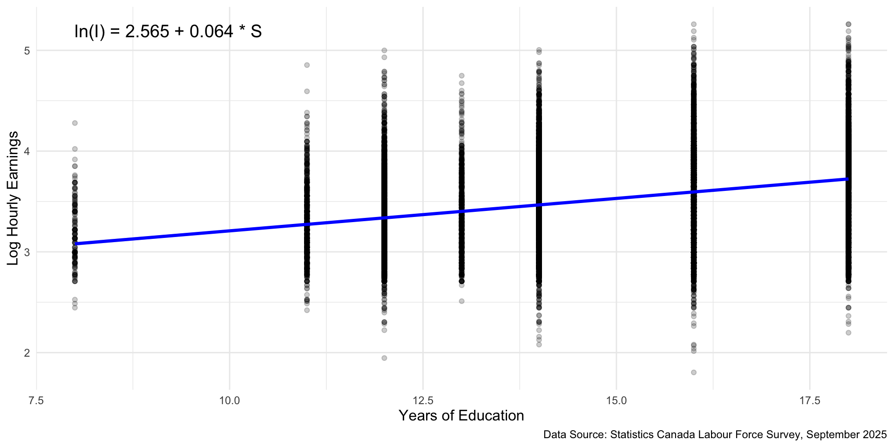
Earnings by Education Relative to High School Graduates
| Men | Women | |
|---|---|---|
| 0–8 years | -0.125 (0.019) | -0.178 (0.024) |
| Some high school | -0.073 (0.010) | -0.103 (0.012) |
| Some postsecondary | 0.065 (0.012) | 0.076 (0.012) |
| Postsecondary certificate | 0.163 (0.007) | 0.141 (0.007) |
| Bachelor's degree | 0.296 (0.008) | 0.366 (0.007) |
| Graduate degree | 0.397 (0.009) | 0.485 (0.009) |
| Num.Obs. | 28560 | 28320 |
| R2 | 0.268 | 0.296 |
| RMSE | 0.40 | 0.37 |
Ability Bias
Key Definition
Ability bias: people with more ability tend to get more schooling, and would earn more even without it. So OLS credits schooling with part of the return to ability
- The bias is usually thought to be positive, so OLS would overstate the return to schooling. But it can go either way, because ability has more than one dimension
- The ideal fix is an experiment that randomly assigns schooling, which isn’t possible
- Instead, economists look for a natural experiment: something that changes schooling in a way unrelated to ability, “as good as randomly assigned”
The Size of the Bias
- Suppose log earnings depend on schooling and ability \(A\):
\[\ln I = \alpha + \beta S + \gamma A + \varepsilon\]
- And ability is related to schooling:
\[A = \delta_0 + \delta_1 S + v\]
- Leave \(A\) out, and OLS estimates:
The Bias Formula
\[\tilde{\beta} = \underbrace{\beta}_{\text{true return}} + \underbrace{\gamma\,\delta_1}_{\text{ability bias}}\]
- If ability raises earnings (\(\gamma > 0\)) and goes with more schooling (\(\delta_1 > 0\)), OLS overstates the return
iClicker Question
Some 18-year-olds can step into a well-paid family business. They skip university, and the business lets them earn more for the rest of their lives. A study regresses log earnings on schooling and leaves out “has a family business.” Its estimated return to schooling is:
A) Too high, as with ability bias
B) Too high, because the business raises earnings
C) Unbiased, because a family business isn’t ability
D) Too low, because the business raises earnings but goes with less schooling
E) Unbiased, because the effect of the business averages out across people
Natural Experiments
- Compulsory schooling laws: students must stay in school until a set age, so birth month and the law decide how long some stay
- Angrist and Krueger (1991), US: about 7.5% a year for men. But birth month also affects how old a child is relative to classmates, which matters on its own (Bedard and Dhuey 2006)
- Oreopoulos (2006), school-leaving laws in Canada and the UK: 10% or more. Devereux and Hart (2010) find smaller returns for the UK
- College proximity: growing up near a college makes it cheaper to go. Card (1995): OLS gives 7.5%, proximity gives about 14%
Note
Natural experiments mostly give returns as large as OLS, or larger. So ability bias looks small: the book concludes it was “exaggerated”
Canada’s School Entry and Leaving Laws, by Province
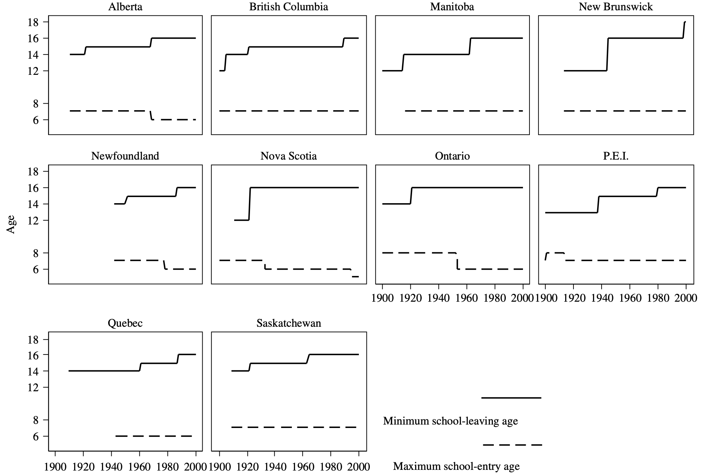
Credentials and Signalling in the Data
- Under pure human capital, a diploma adds nothing beyond the years of learning it took
- Ferrer and Riddell (2002), Canada: people with the same years of schooling earn more if they finished the credential. That’s consistent with signalling
- If employers learn ability over time, signals should matter less as a career goes on (Altonji and Pierret)
- Aryal et al. (2019): about 30% of the return to schooling is signalling, and the share falls with experience
- So both theories have support, and most of the return looks like human capital
Early Childhood Education
Investing Early
- Human capital theory says invest early: the payoff lasts longer, and forgone earnings are lower
- Early skills make later learning more productive (Cunha et al. 2010). Children from disadvantaged families are already behind when they start school
- Perry Preschool (US, 1960s): disadvantaged children randomly assigned to intensive preschool had more education, higher earnings, and less crime as adults. But it was small and costly
- Head Start (US, much larger): mixed results, and many gains fade as children grow up
- Quebec’s $5-a-day child care (universal): no positive effect on children’s outcomes, even later in life (Baker et al. 2008, 2019)
Note
That matters for the national child care system Canada began funding in 2021. The clearest gains so far come from intensive programs targeted at disadvantaged children
Social Returns to Education
- Private costs and benefits fall on the student. Social costs and benefits count everyone
- Real costs vs. transfers: society counts real costs, the resources used up (teachers’ time, buildings, the output students don’t produce). Transfer costs, like a tuition subsidy, move money between people and drop out of the social total
- Spillovers: workers earn more in cities with more educated workers (Moretti), and educated STEM immigrants raise other workers’ productivity (Peri et al.)
- Benefits outside the job: less crime (Lochner and Moretti), more civic participation (Milligan et al.), and longer lives (Lleras-Muney)
- But the evidence is mixed: there are no clear spillovers from high school, college spillovers may be confined to the 1980s, and newer studies find weaker benefits outside the job
Policy
Spillovers are a case for public subsidies for education. If education is mostly a signal, the case is weaker
iClicker Question
Ontario pays $6,000 of each university student’s tuition out of tax revenue. When we add up the social cost of a year of university, the $6,000 subsidy:
A) Lowers the social cost by $6,000, because students pay less
B) Adds $6,000 to the social cost, on top of the cost of running the university
C) Doesn’t count, because it only moves money from taxpayers to students
D) Is the only part of tuition that counts as a social cost
E) Lowers the social cost, because taxpayers spread it across many people
Education and Inequality
Education and Inequality
- Earnings inequality in Canada rose in the 1980s and 1990s, and has been fairly stable since
- Two possible sources:
- A rising return to education: the gap between education groups widens
- More inequality within education groups: workers with the same education drift apart
- In Canada, most of the rise came from within education groups. The university premium rose modestly, about 5 points for men from 1980 to 2005 (Boudarbat et al.)
- Explanations for higher returns: technological change favouring skilled, non-routine work (Chapter 10), and trade and globalization
- Polarization: in the US, both jobs and wages polarized. In Canada, jobs did but wages didn’t (Green and Sand)
- Unions: their decline widened wage inequality, but didn’t raise the return to schooling (DiNardo and Lemieux)
- Since the mid-2000s, the resource boom and higher minimum wages narrowed wage gaps in several provinces (Fortin and Lemieux)
Top 10% Income Share in Canada, 1976–2021
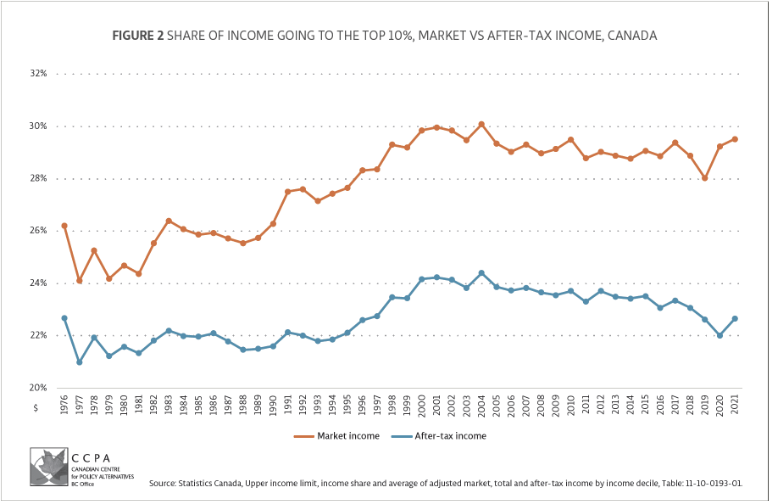
Training
General and Specific Training
- Workers keep building human capital on the job, after their schooling ends
Key Definitions
General training: skills valued at many firms
Specific training: skills valued only at the firm that provides them
- Who pays for training, the worker or the firm? It depends on whether the worker can take the skills to another employer
- Most training is a mix. Skills can be specific to an industry, an occupation, or a set of tasks rather than to one firm
General Training: The Worker Pays
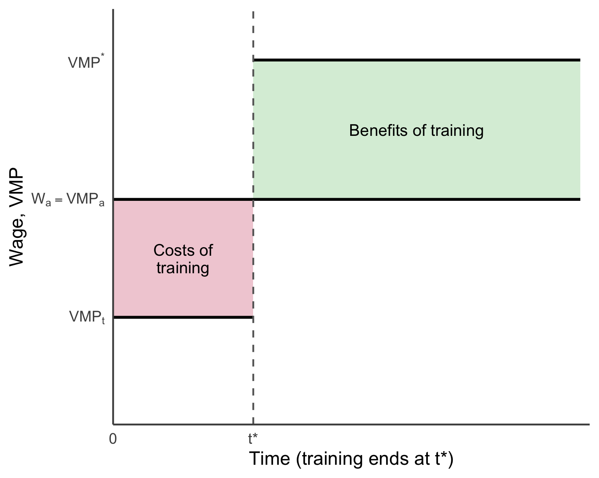
- Trained workers are more productive at every firm, so other firms will bid their wage up to \(VMP^*\)
- A firm that paid for the training couldn’t get it back: the worker would leave, or demand the higher wage
- So the worker pays, by accepting a wage of \(VMP_t\) during training, below the \(W_a\) they could earn untrained
- They earn \(VMP^*\) after training. Worth it if the present value of the gain beats the cost
Specific Training: The Firm Pays

- Specific skills raise productivity only at this firm, so other firms won’t pay more for them
- The firm can pay \(W_a\) throughout, and pay for the training itself:
- Cost during training: \(W_a - VMP_t\)
- Benefit after training: \(VMP^* - W_a\)
- The risk: if the worker quits after training, the firm loses its investment
Sharing the Cost of Specific Training
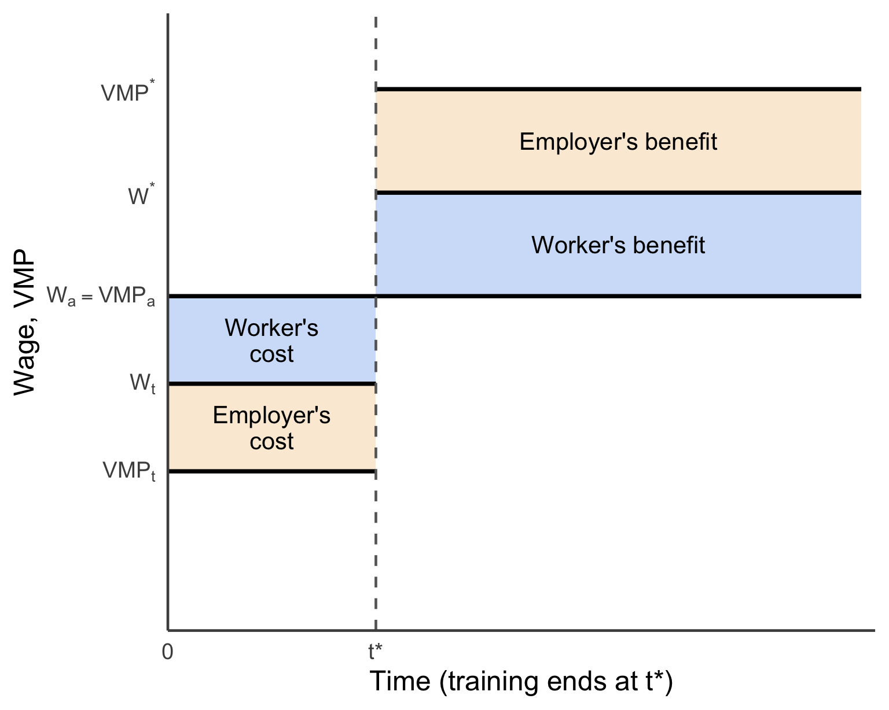
- To keep trained workers, the firm and worker share the investment:
- During training, the wage \(W_t\) is below \(W_a\) but above \(VMP_t\)
- After training, the wage \(W^*\) is above \(W_a\) but below \(VMP^*\)
- Now both lose if the job ends. Specific skills act as glue: fewer quits, fewer layoffs, and longer job tenure
- Training is really gradual, so wages rise smoothly with tenure, but the logic is the same
iClicker Question
A trucking company trains new hires for a commercial driver’s licence, which every trucking company requires. In the training model from class, who pays for the training, and how?
A) The firm, because it chose to offer the training
B) The firm and the worker share it, as with specific training
C) The firm, which gets its money back by paying trained drivers less than their VMP
D) The government, because the training is general
E) The worker, by accepting lower pay during training
Government Training Programs
- Active labour market programs: government training, job-search help, and wage subsidies for the unemployed
- The case for them: credit constraints, poor information about training, and spillovers
- Evaluating them is hard. Trainees select themselves, and many enrol after an unusual drop in earnings that would have bounced back anyway (mean reversion)
- The best evidence comes from randomized experiments, or careful comparison groups
What the Evidence Shows
A review of many programs (Card et al.) finds small effects at first, and positive effects after two or three years. Effects are largest for women and the long-term unemployed, and programs that build human capital do better than job-search help in the long run
Summary
Summary
Schooling as an investment:
- People invest until \(\Delta I / r = I + D\), or until \(irr = r\)
- Credit constraints, taxes, and pay in jobs that need no degree all shift the choice
Signalling:
- Education can raise pay by revealing ability, as long as it costs low-ability workers more. It pays the individual either way, but its value to society differs
Evidence:
- Returns to schooling in Canada are about 10 to 15% a year. Natural experiments suggest ability bias is small
- Credentials matter too, so part of the return is signalling
- Early childhood investments matter, and targeted programs show the clearest gains
Training:
- Workers pay for general training. Firms and workers share specific training
- Government training programs pay off after a few years
Social Returns to Education